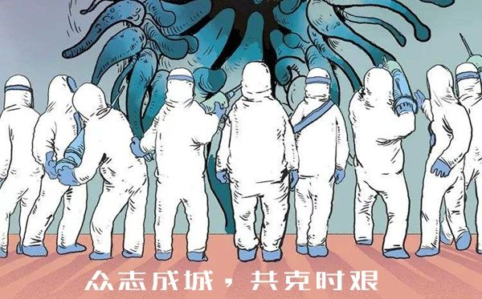

第二版
第二版

疫情使人们分而聚集，社会的实感被无限削弱，我们只能通过复杂纷繁的互联网与世界交互，通过互联网去感知往常的社会气息。而割裂就存在于其中。
网络的发达让我们能够知道任何发生在远距离的事。
正如在疫情中时，远离疫情爆发点的我们在网络上紧张地关注每一篇关于疫情报道，关注每一个和疫情相关地视频，忧心地讨论每一个和疫情有关的话题，强大的同理心使我们难以从或痛苦或难过或恐惧的心情中抽离；可脱离网络后，摆在桌面上有数不尽的作业，处理不完的工作报表，积攒在一起不得不做的家务，日渐减少的积蓄，这些切实而繁琐的生活琐事依旧让人烦恼，之前的情绪就如同镜花水月一般，脆弱而遥远。
面对巨大的差异，我总是在想，同在一个世界之中生活，大家却不免面临不同的处境，人常活在困顿之中，我们丰衣足食，安宁的住所和供应不断的丰富佳肴，在我们想着蛋糕和下午茶的时候，是不是会突然在眼前浮现这样的一幕：硝烟弥漫这尘土飞扬的沙场，炮火声起起伏伏，孩童的哭叫被突然的炸裂声扼住，一声崩裂后世界静的骇人。另一个世界有这样的一群人们，他们不敢想着面包和牛奶，他们渴望今晚的月亮会升起，明天还会有朝阳，每一天的生命被看作是上天的恩赐，活着不再是人的权利，而是给予幸存者的一份恩赐。我们的生活也许一生都不会有炮火和硝烟，我们的国家给我们和平与富足，给我们生活与希望。可要知道并非这个世界上的所有人都有这样一个伟大统一的祖国给予他们庇护，我们怜惜他们的处境，感叹我们美好的境遇，“世上往往没有设身处地，他人的痛苦我们永远不能明白”，想到这里，我的心会猛烈的刺痛，我们的爱与关怀只能在发声，我们呼吁，我们抨击，我们谴责……我们能做的只有这些，除此之外又还能有什么。
或许我们有一些能做到的事，半杯要被倒掉的牛奶，一口没有吃完的面包，它们不应跟着垃圾车走向无谓。懒得关上的滴水龙头，掉落地上滚得遍地的卷纸，一滴水一片叶不应这样无声的消逝。我们看见非洲因干旱而龟裂的土地，会不会想到出门前没有关上的水龙头；看见雨林深处突兀的一片木桩，像是地球上的一块怪斑，会不会想到未经使用就扔进垃圾桶的卷纸；看见因饥饿而肋骨斑斑的孩子，他们突兀的眼睛只有恐惧与迷茫，你有会不会想起来倒掉的牛奶和面包。我们在叫喊叭关怀，爱与人道主义，说出来的口号言之凿凿耸人听闻，好像只有这样，才可以让我们站在道德制高点对世界上的不公指手画脚。殊不知也许我们痛恨的这些，会因我们的一个不经意的浪费而变得更糟，这何尝不是一种割裂感。
无所适从的窘迫，脆弱的情绪永远不能填补割裂，唯有发自内心的信念和坚实的动作才不会让内心的尴尬纠结愈演愈烈。